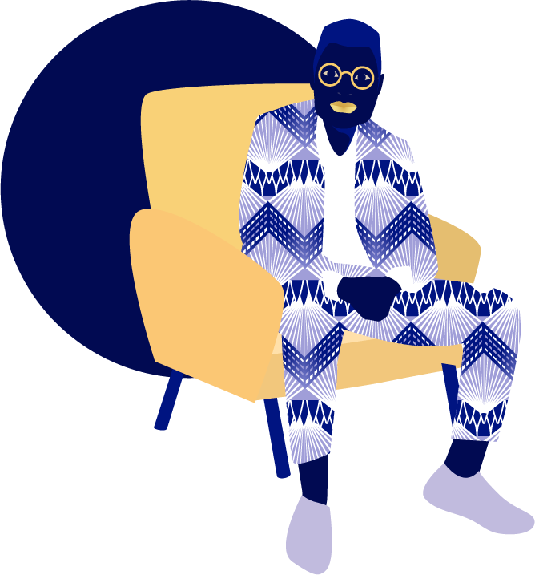

Dans le cadre d'un projet de cours, il nous a été demandé d'adapter l'ouvrage de notre choix en objet interactif. Le roman
Nous avons cherché à proposer une extension à la lecture du roman, afin de permettre au lecteur de s'immerger complètement dans le contexte du récit. La réalisation de ce projet s'est reposée sur deux axes essentiels : la recherche documentaire et la création graphique. Le travail visuel autour de ce projet s'est avéré passionnant : il s'agissait de réussir à retranscrire l'ambiance et l'univers décrit par l'auteure de la façon la plus fidèle possible, tout en laissant une marge d'imagination à l'utilisateur.
Création des décors destinés à être intégrés dans le site web par la suite. Réalisation des premières interfaces,
Recherche et constitution d'un dossier documentaire. Editorialisation du contenu, travail d'analyse autour de passages du livre préalablement sélectionnés.